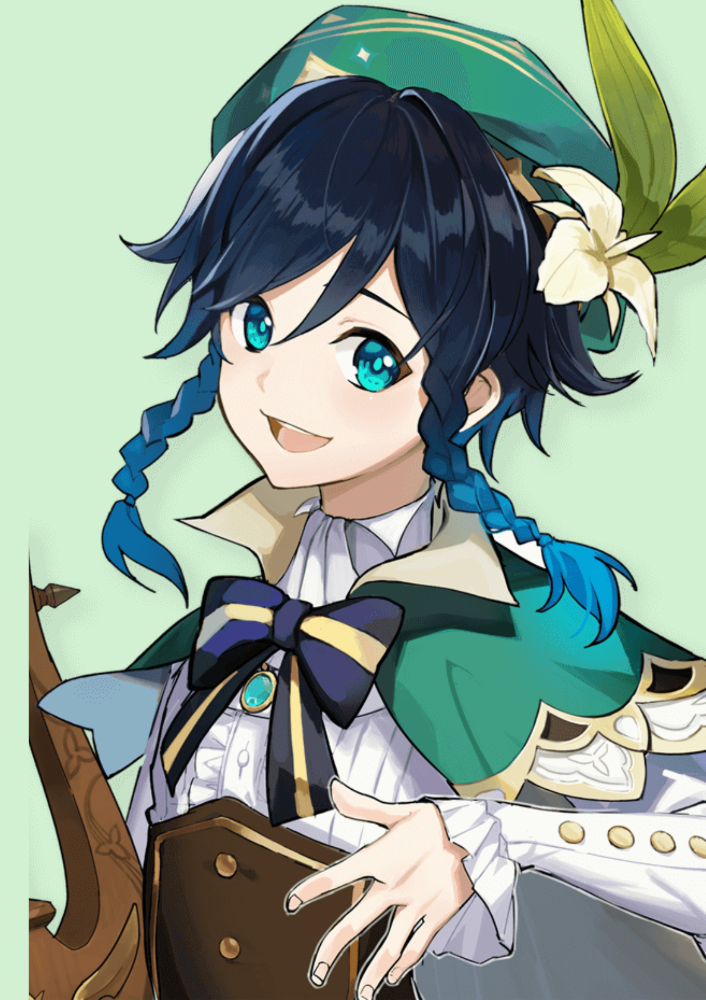
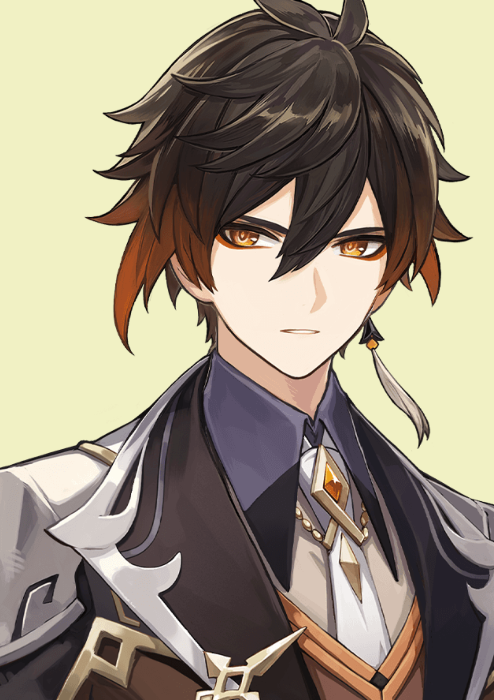
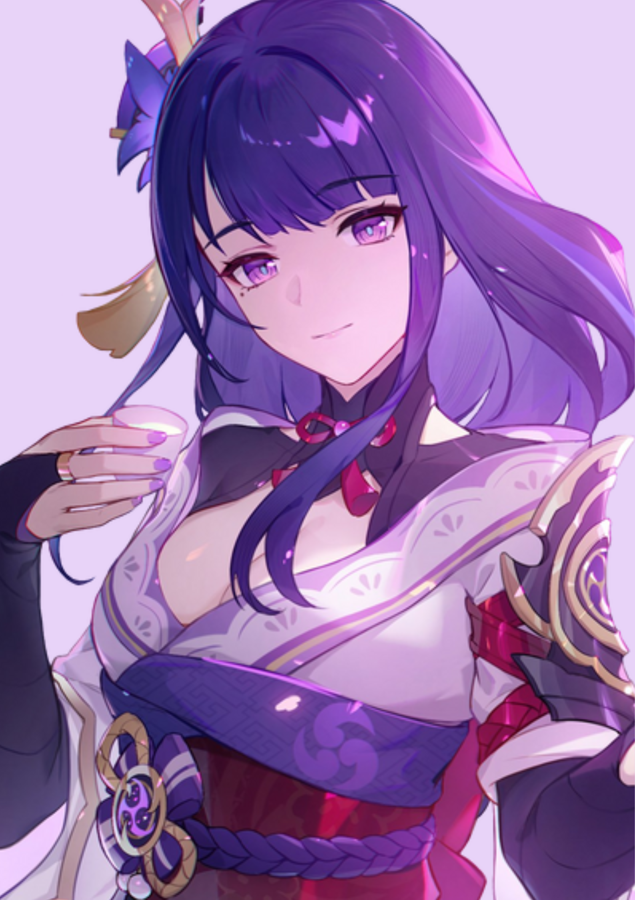
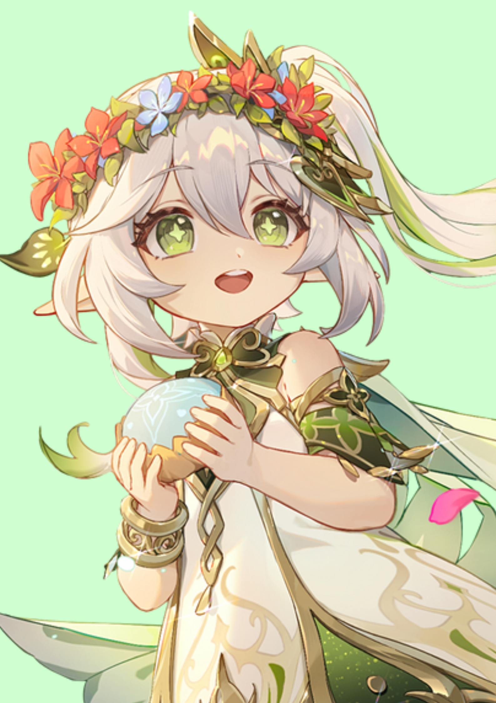
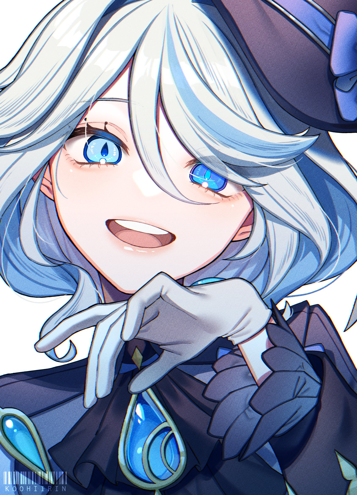
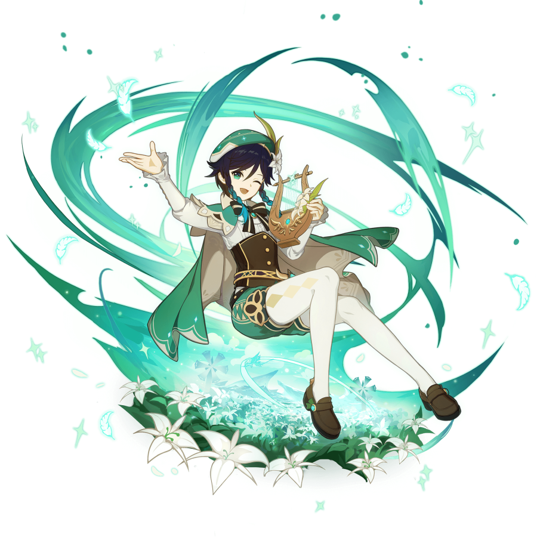

Select an Archon
    

Venti
Venti is a playable Anemo character in Genshin Impact. He is a free-spirited, wine-loving bard in Mondstadt and the current mortal vessel of Barbatos, the Anemo Archon.